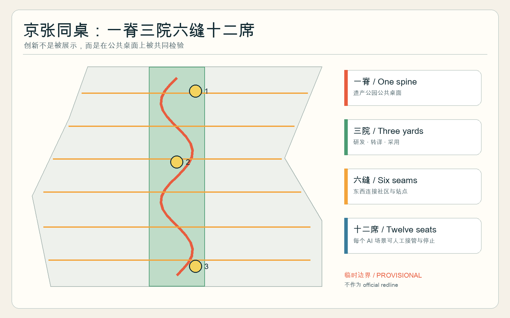
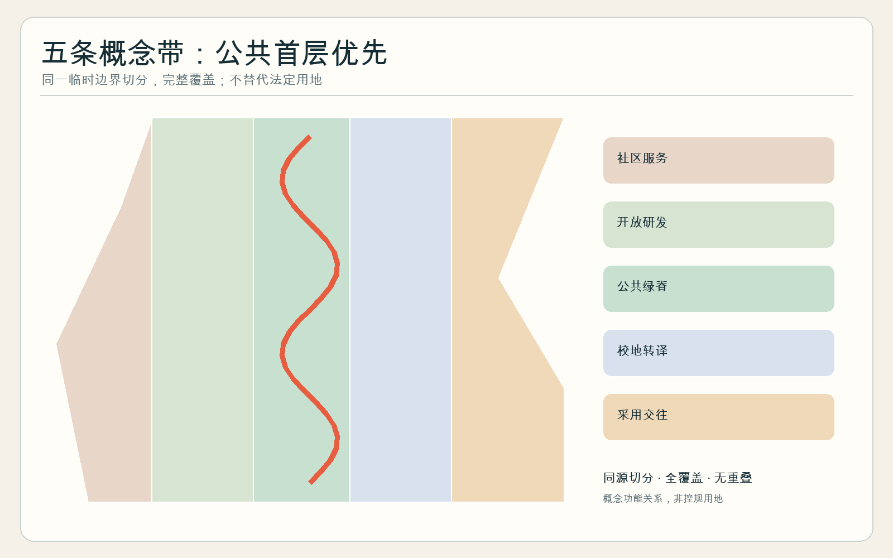
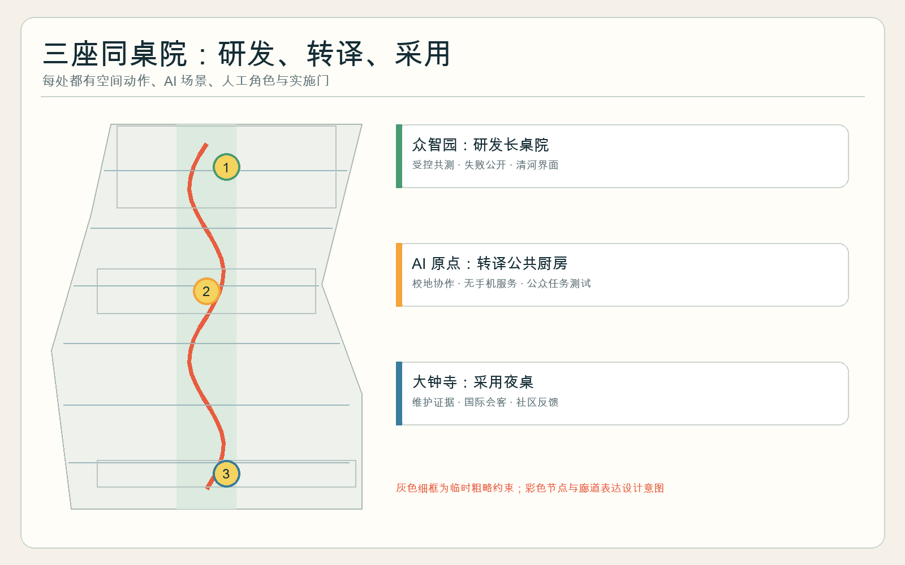
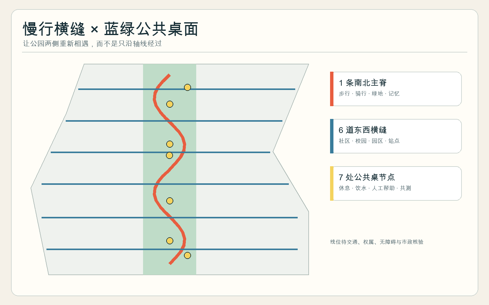
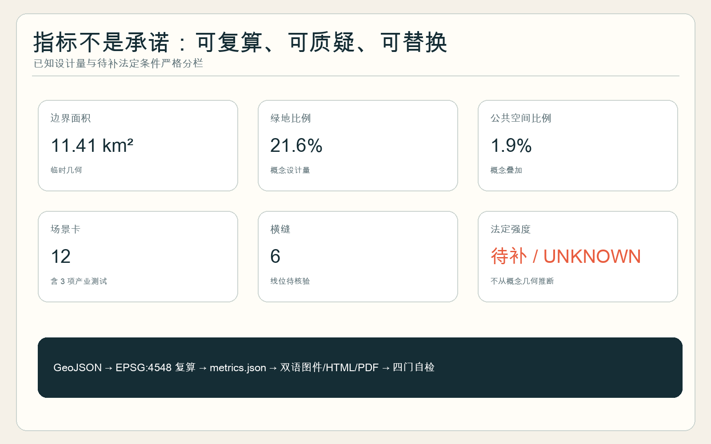

概念建议 · 临时几何
京张同桌 JINGZHANG COMMON TABLE
让创新者与居民坐在一张桌上。
不是官方红线，不构成规划审批或实施承诺。
总览地图

三层范围
统筹产业策略 → 总体城市结构 → 三处重点区原型，逐级传导。

重点区域

用地分区 · 交通慢行 · 蓝绿公共空间

建筑与更新项目
可适应首层；不作逐栋拆改结论。
三座同桌院与六道待审计横缝。
三期逐门推进，不自动扩张。
AI 场景
SC-01 · 公共场景
SC-02 · 公共场景
SC-03 · 产业测试
SC-04 · 产业测试
SC-05 · 公共场景
SC-06 · 公共场景
SC-07 · 产业测试
SC-08 · 公共场景
SC-09 · 公共场景
SC-10 · 公共场景
SC-11 · 公共场景
SC-12 · 公共场景
核心指标
11.41 km²临时提交边界面积
21.6%概念绿地比例
1.9%概念公共空间比例

任务覆盖
公告 1.3—1.5 与 agent.1—agent.6 均映射到章节、图层、指标、图纸与自检。
自检状态
定量校验、空间审查、视觉包装与专业证据四门须在 finalize 后全部通过。
来源
官方公告、已清权智能体任务书、本地专业标准快照，以及六个明确限定用途的比较案例。
假设
| 事项 | 状态 |
|---|---|
| 官方边界与控规 | 待补 |
| 权属、建筑、市政 | 待现场与专业核验 |
| 运营与 AI 试点 | 概念建议，逐门推进，可停止 |